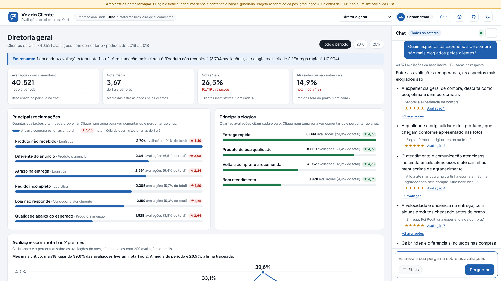
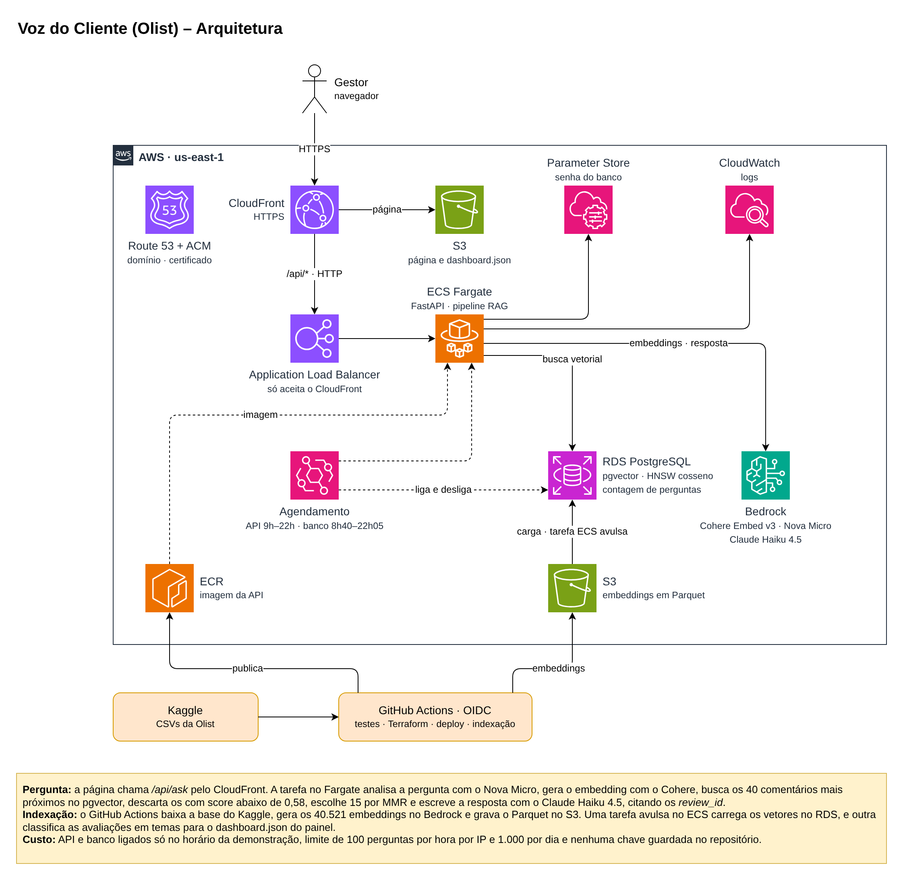
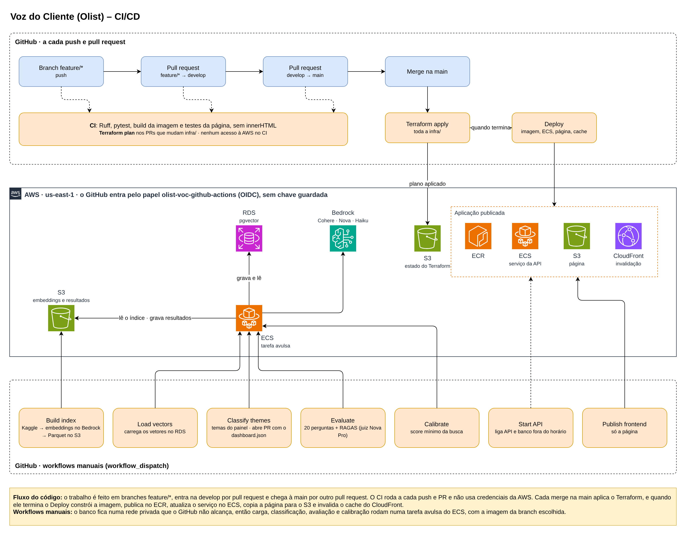
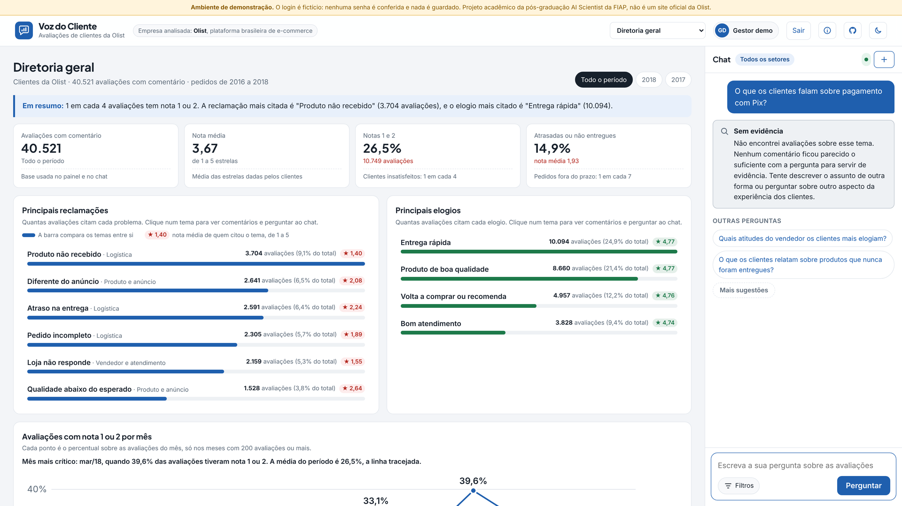

TECH CHALLENGE · FASE 4
Voz do Cliente
Um RAG sobre as avaliações da Olist que responde com base no que os clientes escreveram, e diz quando não sabe.
Tuany Fortunato
Pós-graduação AI Scientist · FIAP
O PROBLEMA
A nota diz se o cliente ficou satisfeito. O comentário diz por quê.
99.224
avaliações na base da Olist, de 2016 a 2018
40.977
com comentário escrito. Ninguém lê tudo isso para decidir.
O que o gestor quer saber
O que mais incomoda, o que mais agrada, e se o problema é do vendedor ou da entrega.
Por que um LLM sozinho não resolve
Ele responde algo plausível e inventado. Para decidir, uma resposta convincente e sem base é pior do que nenhuma.
A SOLUÇÃO
Um painel e um chat com evidências

Painel por setor
Temas com contagem e evolução mês a mês. Mostra o quanto.
Chat com evidências
Cada frase traz os comentários que a sustentam. Mostra o porquê.
Diz quando não sabe
Sem evidência ou fora do escopo, avisa em vez de improvisar.
BASE DE CONHECIMENTO
Um documento por avaliação
99.224
avaliações
40.977
com mensagem
40.521
documentos finais
| Etapa | Decisão e motivo |
|---|---|
| Seleção | Kaggle, cinco tabelas: avaliações, pedidos, itens, produtos e tradução das categorias |
| Limpeza | Leve: mantém acentos, maiúsculas e o “não”. Sem stopwords nem stemming. Emoji vira palavra só no embedding |
| Valores ausentes | Nenhum metadado vazio (“desconhecido”, “mista”), porque nulo quebra o filtro |
| Documentos | Título + mensagem, sem chunking: os comentários são curtos |
| Embeddings | Cohere Embed Multilingual v3, 1.024 dimensões. Titan: 11 h de indexação; Cohere: 25 min |
| Indexação | pgvector no RDS, índice HNSW com cosseno |
PIPELINE RAG
Cinco etapas, da pergunta à resposta
1
Transformação da pergunta
Nova Micro classifica a mensagem, reescreve o tema da busca, tira premissas e identifica as notas pedidas.
2
Recuperação semântica
O tema vira embedding no Cohere e o pgvector devolve os 40 comentários mais próximos, já filtrados.
3
Seleção
Corta abaixo do score 0,58 e o MMR escolhe 15, equilibrando proximidade e diversidade.
4
Contexto
Os 15 comentários vão numerados, com id, nota, categoria e o texto original.
5
Geração
Claude Haiku 4.5 escreve citando cada afirmação. O código confere as citações e decide a situação.
É o mesmo fluxo da página 6 do enunciado: pergunta, processamento, embeddings, recuperação, contexto, geração e resposta fundamentada. Score mínimo e MMR são as duas etapas a mais.
ETAPAS 1 A 3 · ANTES DE CHAMAR O MODELO DA RESPOSTA
Buscar pelo tema, cortar, diversificar
Tema reescrito
Buscar pelo tema trouxe comentários mais específicos em 8 de 9 perguntas da calibração. “Padrões” e “determinadas categorias” saem do tema, porque nenhum cliente escreve assim. “Clientes insatisfeitos” vira filtro de notas 1 e 2.
Busca por sentido
“O produto não chegou” e “até hoje espero a encomenda” ficam próximos. Os filtros de nota, categoria e entrega rodam dentro do PostgreSQL, antes do corte.
Score 0,58 e MMR
Na calibração, o Pix, sem resposta na base, ficou em 0,572. Nas perguntas com resposta, o 15º comentário ficou entre 0,62 e 0,73. Sem MMR, vinham várias cópias de “produto com defeito”.
Se nada passa do corte, a resposta é “sem evidência”, sem chamar o modelo. Pergunta fora do escopo para já na primeira etapa.
ETAPAS 4 E 5 · CONTEXTO E GERAÇÃO
Cada frase aponta para uma avaliação real
[1] (avaliação <id>, nota 1, categoria cama_mesa_banho) texto original do cliente
Contexto
- Só a pergunta limpa e os 15 comentários. O histórico da conversa não entra, e um teste confere isso.
- O número liga a frase ao review_id.
- A categoria entrou porque, sem ela, o modelo dizia que os comentários não informavam a categoria.
Geração e checagem
- Claude Haiku 4.5, com regras: citar cada afirmação, não eleger “o principal”, não chamar de recorrente sem o comentário dizer que se repetiu.
- O código apaga citações inexistentes, suaviza “vários” e “recorrente” sem apoio e decide a situação.

DESAFIO ADICIONAL · METADADOS
O que não está no texto vira filtro
| Metadado | Usa? | Como entra |
|---|---|---|
| Nota | Sim | Filtro de 1 a 5, ou vindo da pergunta: “clientes insatisfeitos” vira notas 1 e 2 |
| Categoria | Sim | Filtro com as 73 categorias |
| Entrega | Sim | No prazo, atrasada, não entregue ou “com problema” |
| Pedido | Em parte | As datas viram a situação da entrega e os itens viram a categoria |
| Período | No painel | Evolução mês a mês no painel. O chat busca de 2016 a 2018 |
15/15
comentários dentro do recorte com o filtro, nas três perguntas de metadados do enunciado
9 · 8 · 12
sem filtro: notas baixas, cama, mesa e banho, entregas atrasadas
ARQUITETURA
Tudo na AWS, em um só endereço
- CloudFront serve a página do S3 e manda /api/* ao ALB. Sem CORS.
- FastAPI no ECS Fargate, modelos no Bedrock, vetores no RDS com pgvector.
- pgvector: o filtro vira SQL e o score mínimo e o MMR ficam no código.
- Custo: ligado das 9h às 22h, 100 perguntas por hora por IP, teto de 1.000 por dia.

CI/CD
Infra em código, sem chave no repositório
- feature/* → develop → main, sempre por PR.
- CI com Ruff, pytest e testes da página, sem acesso à AWS.
- Merge na main: Terraform apply e Deploy.
- Acesso à AWS por OIDC.

AVALIAÇÃO
As notas quase empatam. As respostas, não.
| Modelo da resposta | Faithfulness | Relevancy | Precision | Situação certa |
|---|---|---|---|---|
| Claude Haiku 4.5 (publicado) | 0,975 | 0,560 | 0,736 | 10 de 11 |
| Nova Micro | 0,992 | 0,552 | 0,675 | 10 de 11 |
RAGAS em 17/11, mesmas 11 perguntas, juiz Nova Pro (modelo diferente dos que respondem).
Problemas recorrentes de prazo
O Nova afirmou a recorrência e levou relevancy 0,70. O Haiku recusou a conclusão, porque nenhum comentário conta que o problema se repetiu, e levou 0.
O que isso ensina
A métrica pune quem não responde do jeito que a pergunta pediu, e a faithfulness não pega exagero de quantidade. A troca de modelo foi decidida lendo as respostas.
DESAFIOS E DECISÕES
O que deu trabalho e o que ficou de fora
Desafios
- Pix: o score mínimo sozinho não segurou. A segunda proteção foi a regra no prompt.
- “Recorrente”: uma resposta citou comentários que diziam “foi a primeira vez”. Virou regra no prompt, checagem no código e troca para o Haiku 4.5.
- Métrica: o RAGAS deu notas quase iguais a respostas de qualidade bem diferente.
Decisões técnicas
- pgvector em vez de Knowledge Bases
- Cohere em vez de Titan
- Uma avaliação por documento, sem chunking
- Score mínimo de 0,58 com MMR
- Análise da pergunta separada da resposta
Limites: o chat descreve 15 comentários, não a base inteira, e quem mostra frequência é o painel. Não há filtro de período no chat, e a base termina em 2018.
DEMONSTRAÇÃO
Agora no site
Quais são os principais problemas relatados pelos clientes em suas avaliações?
O que os clientes relatam sobre problemas relacionados à entrega?
Quais aspectos da experiência de compra são mais elogiados pelos clientes?
Quais padrões podem ser identificados nas avaliações de clientes insatisfeitos?
Quais avaliações sustentam a conclusão de que existem problemas recorrentes relacionados ao prazo de entrega?
E também
Metadados: elogios em cama, mesa e banho, com a categoria marcada.
“Não sei”: pagamento por Pix e o faturamento da Olist em 2018.
olist-chat.tuanyfortunato.com.br · github.com/tuanyfortunato/olist-voc-intelligence-chat
RESERVA DA DEMO · Problemas recorrentes de prazo: a resposta não aceita a premissa

RESERVA DA DEMO · Clientes insatisfeitos: notas 1 e 2 aplicadas a partir da pergunta

RESERVA DA DEMO · Elogios em cama, mesa e banho, com a categoria marcada

RESERVA DA DEMO · Entregas insatisfatórias, com o filtro de entrega marcado

RESERVA DA DEMO · “Não sei”: sem avaliação relevante sobre Pix

RESERVA DA DEMO · “Não sei”: pergunta fora do escopo da base